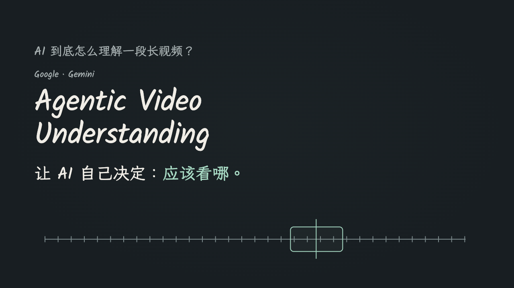

需求会在创作中变化
“八张改成六张”
“只看图片也能看懂”
真实图文任务要求调整篇幅和解释密度。产品需要保留共同理解，同时允许不同表达独立修改。
围绕个人创作中的四类任务，把理解、创作、修改与检查组织成可复用的工作流，让每一次生成有依据，每一处修改能接续。
个人使用项目 · 独立完成需求梳理、流程设计、实现与迭代
一份分析不等于可独立阅读的卡片，一篇口播稿不等于适合录制的演示，一次模型审稿通过也不等于内容可以发布。
“八张改成六张”
“只看图片也能看懂”
真实图文任务要求调整篇幅和解释密度。产品需要保留共同理解，同时允许不同表达独立修改。
已有实机演示，
只需要文案和封面。
真实使用中会跳过演示制作、手动改文案，再重新设计封面。流程必须支持局部执行。
草稿已经保存，
发布准备仍可能失败。
历史运行暴露了生成、检查和发布之间的差异。一个成功提示不足以解释用户拿到了什么。
交付内容有依据、产物可以独立使用、修改不丢上下文、失败能保留已完成部分。
使用范围：本人内容创作；尚未验证多人使用与规模化运营。按输入和交付组织能力。四个板块各有入口，共用“依据 → 创作 → 检查”的产品原则；目前通过明确材料交接，尚未自动串联。
文献综述视频改编任务中，读者未必观看原片，也未必阅读正文。因此卡片需要自己讲清逻辑，不能只是把文章截成六张图片。
先生成可回查的分析，再由正文和图片两个分支独立创作。出图前规划每页要说明什么，修改页数时重新分配信息。
2026-08-27 真实任务生成原图。历史最终裁切文件未恢复，4 张原图比例为 2:3，2 张为 3:4；图中的 62 页、160 条引用属于来源视频案例。
要求“只看图片也能看懂”，把验收重点从页数转向每页是否讲清观点。
保留分析，重做卡片规划；正文不需要被强制拆成与图片一一对应的段落。
已对应分析、正文、六张规划与生成原图；五项核心内容有落点，最终发布规格仍有缺口。
演示帮助观众跟上讲述，标题说明观看价值，封面突出主题。它们需要共享事实与承诺，也需要不同的叙事和视觉设计。
三个 Skill 可独立调用：演示与文案直接依据原稿，封面承接本期文案。允许跳过已有素材，保留局部修改空间。

第 005 期实际产物的修订版，15 页、42 个分步状态。点击或使用方向键推进；视频识别内容来自当时口播记录，本轮仅修订素材。
历史发布文案，原样展示；其中“这期实测”是当时视频内容，不是本轮作品集验证。
同一主题的三种独立构图，点击可查看原图。三张均为历史产物，文件规格已核验。
复核发现第 5–7 页未跟随后续口播稿，揭示了多产物独立修改带来的版本风险。
对齐演示内容，保存原稿、演示、文案和三图的版本指纹，后续文件变化触发复核。
文件指纹解决“是否变过”，人工与语义复核解决“是否一致”；两者各自承担明确任务。
这次任务明确跳过 HTML。本人改过发布文案后，继续调整封面标题层级与设计；工作流接续现有素材。
自有产品内容既要具体、有吸引力，也不能编造能力和体验。给模型一个产品名远远不够，事实、账号表达和检查标准都要进入流程。
产品与账号资料作为稳定输入，结合研究、结构检查和模型审稿；最多五轮审改。本作品集以草稿交付为范围，最终采纳由本人判断。
散步时，你会不会停下来多看一眼路边的鸟？想认识它，也想留下这次观察，可以从查资料、找地点和做记录开始。
图鉴帮你认识，地图帮你找线索，记录留下这次观察。
本次逐项核对 9 项主张：5 项由产品资料支持，4 项删除或调整。核对范围仅为这一篇候选稿。
把“观鸟热点”写成能找到鸟多的地点。
改为地点线索，保留现场不确定性。把拍照与荣誉页、全部观察记录作绝对关联。
删除资料无法支持的功能映射。标题暗示一次没有对应记录的亲身经历。
改成使用场景，避免虚构体验。两轮模型审稿后通过；分数只代表内部审稿。
已有产物不应被一次下游异常抹掉。
保存成功后立即计数；注入发布失败验证状态。
历史审改来自实际日志；本轮事实复核由 AI 辅助完成，未重新运行生产模型或实际发布。确定性规则只覆盖部分问题，不能替代语义与产品核实。
不同平台的热度口径无法直接相加；抓取时间也不是新闻发生时间。选题工具首先要帮助创作者理解依据，再决定什么值得写。
程序采集并标准化条目，保留逐源状态；Agent 核对语义、解释受众相关性。事实、创作角度与待验证项分别表达。
15 条记录中，10 条没有发布时间。保留“当前在榜”含义，不包装成最近 24 小时发生的事件。
本次进程耗时 4.391 秒；这是采集耗时，不是整份研究简报的制作时间。定位到命令行未使用现有系统代理，沿用代理后恢复采集。
先保存来源诊断，再返回失败状态，让用户知道缺了什么、下一步检查哪里。
三个候选均来自 GitHub，不能称作跨平台共振；选题优先级是编辑判断，不是流量预测。
四种任务带来同一组产品问题：在哪里复用、在哪里分开、哪些判断交给模型、哪些必须留下人的决定。
语义改编、选题和视觉设计需要模型；编号、尺寸、时间过滤与状态记录适合确定性程序。调用方式跟随任务的不确定性，而不是让所有步骤都由 Agent 自由决定。
读者、风格和交付组合经常变化。用独立 Skill 约束输入与输出，由宿主按任务组织；代价是依赖宿主能力，跨产物版本需要显式交接。
审改轮次、停止条件、逐源状态更固定，交给程序控制。模型负责表达与语义判断；代价是流程变更需要维护代码。
当前未做模型横向基准或微调实验；项目判断聚焦流程可用性，模型质量与成本仍需独立比较。
一次理解后的分析服务正文和卡片；原稿服务演示与文案。比各自从头生成更便于回查，但增加跨产物一致性的检查责任。
对应问题：八张改六张、脚本版本漂移不强迫每次重跑整套素材。已有实机演示就只做文案与封面；代价是交接必须明确到本期文件，而不是猜编号。
对应问题：已有素材如何复用程序处理结构、尺寸与播放状态；模型协助审稿；事实、表达和采纳仍需复核。这样能定位问题，但暂时无法完全自动验收。
对应问题：模型通过仍有无依据表达审改设置轮次上限，采集逐源记录，保存与发布分开。执行未能全成功时，仍能解释剩余价值和失败位置。
对应问题：发布异常、来源超时以上为基于现有实现与真实任务的产品复盘；未将备选方案表述为已经完成的对照实验。模型、图像生成及工具执行能力来自宿主或外部服务；项目工作集中于任务设计、能力组织、交接约定、实现和质量控制。
当前证据支持流程可执行、产物可展示，以及具体问题已被定位和改进。效率、成本与传播效果需要独立测量。
| 产品目标 | 当前证据 | 仍需验证 |
|---|---|---|
| 图文能独立表达 | 同一视频的分析、正文和六张原图已对应；核心内容逐项复核。 | 最终发布规格与本人采纳。 |
| 素材保持同一期承诺 | 演示对齐修订稿；15 页、42 状态及三封面规格已检查。 | 不同任务下的修改负担与成本。 |
| 产品内容受事实约束 | 保留历史审改，完成逐项事实复核，修复保存状态。 | 固定样本的新生成与人工质量评价。 |
| 选题依据可核查 | 三源、15 条真实采集，保留失败与恢复记录。 | 来源长期可用性与归并质量。 |